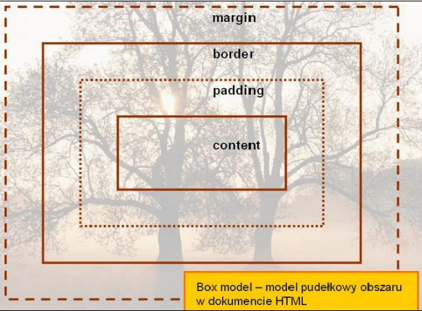

- Podaj definicję modelu pudełkowego.
Model pudełkowy pozwala nam precyzyjnie określić wymiary elementu HTML na stronie.
| Zawartość | Opis |
|---|
| Content | Zawartość elementu (np.: tekst, obrazek) |
|---|
| Padding | Otaczające marginesy wewnętrzne, odstęp między obramowaniem i zawartością elementu |
|---|
| Border | Obramowania wokół zawartości elementu, ma styl i kolor. |
|---|
| Margin | Marginesy wokół ramki (margines zewnętrzny). Jest to pusty obszar wokół ramki, który nie ma koloru tła i jest przeźroczysty. |
|---|
- Uwaga1
Padding, border i margin mogą mieć zerową wartość
- Uwaga2
Tło elementu jest określone dla wszystkich z podanych powyżej obszarów z wyjątkiem marginesów zewnętrznych, które zawsze są przezroczyste (transparent).
- Grafika obrazującą model pudełkowy.

- Grafika obrazującą różnicę pomiędzy paddingiem i marginesem